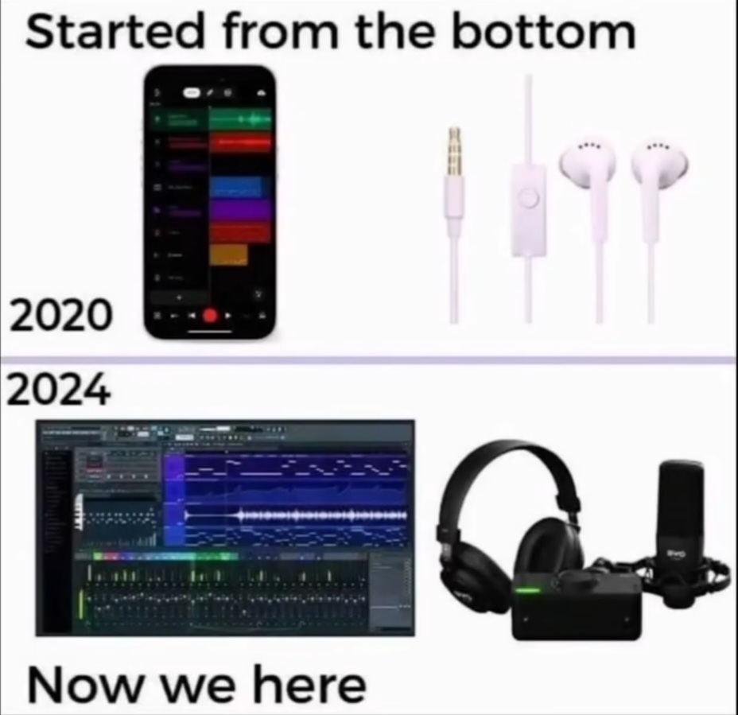

La musique a toujours eu une place très importante dans ma vie. J'ai été bercé dans la musique. Tout style confondu, je suis toujours resté fasciné à l'idée d'être transporté ailleurs par un son et ressentir des émotions sans même devoir articuler de mots derrière.
Pour moi, la musique, c'est un peu comme un refuge. Quand tout va bien, elle amplifie la joie. Quand ça va moins bien, Et quand ça va moins bien, elle m'aide à me vider la tête. Il y a des morceaux qui rappellent des souvenirs, d'autres qui motivent, et certains qui retournent complètement sans que tu saches pourquoi alors même que tu l'as composé toi même. C'est comme un langage à part, que je peux utiliser pour dire ce que je ressens.
Avec le temps, j'ai voulu comprendre comment un simple son pouvait devenir un vrai morceau, alors je me suis intéressé à la MAO (Musique Assistée par Ordinateur). Ce que j'adore, c'est la liberté que ça offre. Tu peux créer ton propre univers sonore, tester plein de choses, changer les sons, les mixer, les arranger comme tu veux… Parfois j'y passe des heures, mais j'adore ça. Pas besoin d'un gros studio ou de materiel de pro, juste de la passion et un peu de patience.

Quand je commence un nouveau projet, j'essaie toujours de raconter quelque chose : une émotion, une ambiance, un moment. Il peut m'arriver de passer un long moment sur un détail, comme une mélodie ou un kick, juste pour que ça sonne exactement comme je l'imagine, car à la fin, c'est ce petit détail-là qui fait toute la différence. Et quand le morceau est enfin terminé, c'est une sensation incroyable de se dire que c'est moi qui l'ai créé.
Aujourd'hui, la musique fait vraiment partie de moi. J'écoute de tout, je m'inspire de tout. Presque tous les jours, après les cours, je me pose devant mon ordi, je teste, j'apprends, je découvre de nouveaux sons. Et ce que je préfère, c'est partager mes morceaux avec les autres. Parce que pour moi, la musique n'a vraiment de sens que si elle est écoutée.
À travers mes sons, j'essaie de transmettre ce que je ressens : de la mélancolie, de la motivation, de la bonne humeur ou mon style à moi. La musique, c'est ma manière à moi de parler, sans forcément avoir besoin de mots.